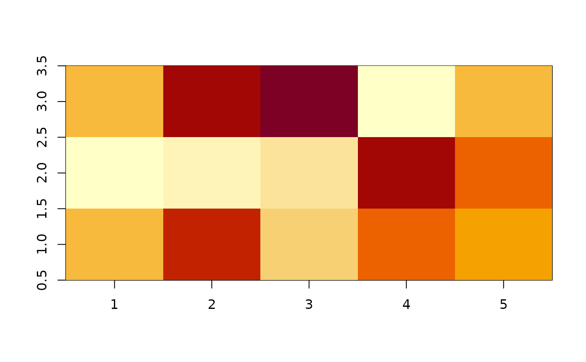

Broom tidies a number of lists that are effectively S3
objects without a class attribute. For example, stats::optim(),
svd() and interp::interp() produce consistent output, but
because they do not have a class attribute, they cannot be handled by S3
dispatch.
These functions look at the elements of a list and determine if there is
an appropriate tidying method to apply to the list. Those tidiers are
implemented as functions of the form tidy_<function> or
glance_<function> and are not exported (but they are documented!).
If no appropriate tidying method is found, they throw an error.
xyz lists (lists where x and y are vectors of coordinates
and z is a matrix of values) are typically used by functions such as
graphics::persp() or graphics::image() and returned
by interpolation functions such as interp::interp().
Arguments
- x
A list with component
x,yandz, wherexandyare vectors andzis a matrix. The length ofxmust equal the number of rows inzand the length ofymust equal the number of columns inz.- ...
Additional arguments. Not used. Needed to match generic signature only. Cautionary note: Misspelled arguments will be absorbed in
..., where they will be ignored. If the misspelled argument has a default value, the default value will be used. For example, if you passconf.lvel = 0.9, all computation will proceed usingconf.level = 0.95. Two exceptions here are:
Value
A tibble::tibble with vector columns x, y and z.
See also
tidy(), graphics::persp(), graphics::image(),
interp::interp()
Other list tidiers:
glance_optim(),
list_tidiers,
tidy_irlba(),
tidy_optim(),
tidy_svd()
Examples
A <- list(x = 1:5, y = 1:3, z = matrix(runif(5 * 3), nrow = 5))
image(A)

tidy(A)
#> # A tibble: 15 × 3
#> x y z
#> <int> <int> <dbl>
#> 1 1 1 0.362
#> 2 2 1 0.674
#> 3 3 1 0.268
#> 4 4 1 0.591
#> 5 5 1 0.443
#> 6 1 2 0.0644
#> 7 2 2 0.176
#> 8 3 2 0.207
#> 9 4 2 0.763
#> 10 5 2 0.592
#> 11 1 3 0.376
#> 12 2 3 0.735
#> 13 3 3 0.859
#> 14 4 3 0.0675
#> 15 5 3 0.353